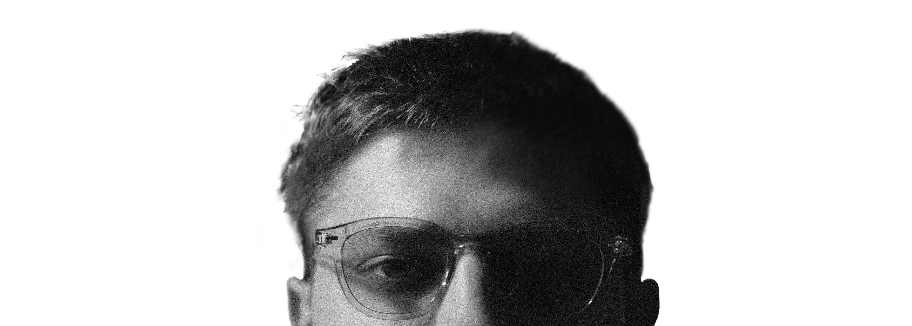

WHO I AM
I'm a documentary photographer from Poland, working on visual stories about cultures, traditions, and professions disappearing under economic and industrial change. I have traveled to many places around the world, documenting the lives of local people and their environments. I pair photography with written reportage, so each story carries the context behind the images.
I hold a Master's Degree in Graphic Design from the Academy of Fine Arts in Katowice. I worked in the field as a design advisor, building data-driven dashboards for major brands including Pfizer, Lamborghini, and Gucci. This background shaped how I see and portray things, as well as how I understand people's needs and help solve their problems. My move toward documenting reality came from realizing that making an impact matters more than making money.
I'm available for editorial assignments, NGO field documentation, and collaborations with organizations working on issues around the world. Get in touch with me below.

{kind=link}